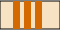
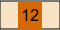
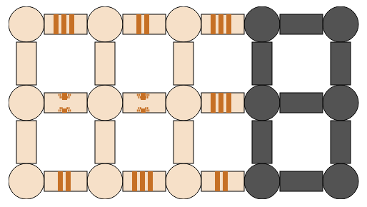
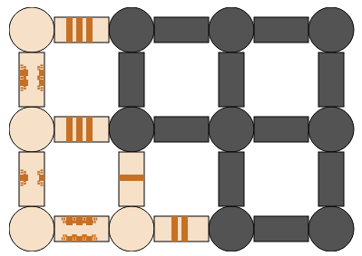
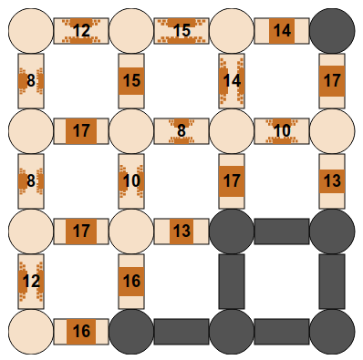

Des pièces rondes sont reliées par des couloirs qui sont parfois bouchés par des murs.
Voici par exemple un couloir bouché par trois murs :

Voici par exemple un couloir bouché par un mur d'épaisseur 12 unités :

Cassez le moins possible de mursd'épaisseur totale de murs pour découvrir toutes les pièces.
Pour casser tous les murs d'un couloirun mur, cliquez sur le couloir.
I varje steg väljer man att rasera väggarna i den korridor som har minst antal väggar, av dem som leder till rum som man ännu inte kan besöka.
I exemplet här nedan bör man alltså börja med korridoren längst ner till höger.
À chaque étape, on choisit de casser le mur qui comporte le moins de briques, parmi les murs qui permettent d'accéder à une nouvelle pièce.
Par exemple, dans la partie ci-dessous, le prochain mur à casser est celui constitué d'une seule brique.
À chaque étape, on choisit de casser le mur le moins épais, parmi les murs qui permettent d'accéder à une nouvelle pièce.
Par exemple, dans la partie ci-dessous, le prochain mur à casser est un des murs d'épaisseur 13.
